Este tema aún no se ha explicado en clase. Está escrito a partir de las diapositivas, razonando como lo hace el profesor (con Goldman, con I = g·(Vm − E), con λ y τ, y con ejemplos con números), para poder seguir la clase. Lo que no viene en las diapositivas va marcado entre paréntesis. Cuando lleguen las transcripciones, se cambiará por lo que diga él.
Este tema junta todo lo anterior. En el tema 10 vimos cómo se comportan pasivamente los potenciales en el tiempo y en el espacio (τ y λ), en el 11 cómo se genera un potencial de acción y en el 12 cómo se conduce. Ahora la pregunta es: si a una neurona le llegan miles de señales, ¿cómo decide si dispara o no, y cómo dispara? Tiene dos partes:
La diapositiva empieza con Cajal y uno de sus dibujos de la corteza. La idea es que el sistema nervioso basa su capacidad, y también su dificultad para entenderlo, en dos cosas: el número de células y la individualidad de cada una. Ninguna neurona es igual a otra.
¿Y de dónde sale esa individualidad? De dos cosas, que son justo las dos partes del tema:
Integrar es eso: sumar todo lo que le llega a una neurona en un momento dado y, según el resultado, generar o no potenciales de acción.
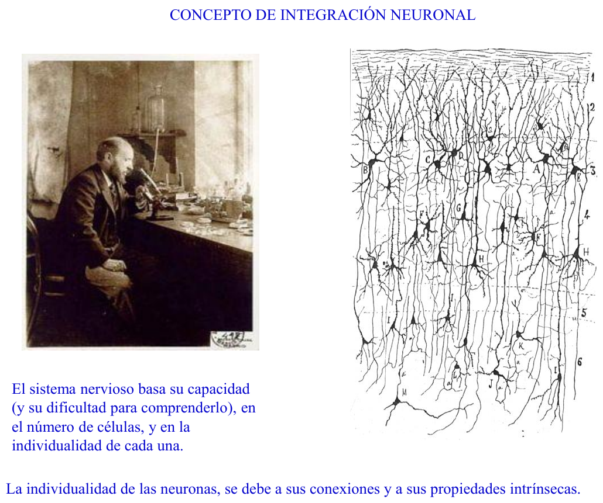
Hay dos tipos de aferencias:
En la diapositiva, arriba (A), está el montaje: una interneurona inhibitoria que hace sinapsis sobre una motoneurona, cada una con su electrodo para inyectar corriente y su electrodo para registrar. Abajo (B) hay tres registros de la motoneurona, todos con el reposo en −65 mV y el umbral en −55 mV:
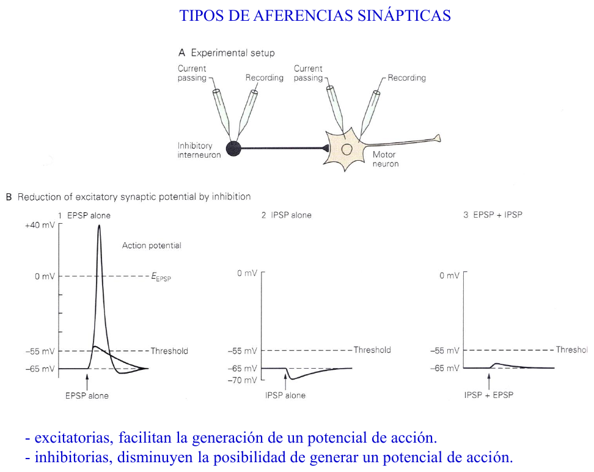
Al microscopio electrónico las sinapsis se distinguen en dos tipos, descritos por Gray:
| Gray tipo I | Gray tipo II | |
|---|---|---|
| Neurotransmisor | Glutamatérgicas (excitatorias) | GABAérgicas (inhibitorias) |
| Zona activa | Grande, de 1–2 µm² | Pequeña, menor de 1 µm² |
| Hendidura sináptica | Ancha, unos 30 nm | Estrecha, unos 20 nm |
| Vesículas | Redondeadas | Ovaladas o aplanadas |
| Localización | Sobre todo en dendritas | Sobre todo en el soma |
En el dibujo de la neurona se ven las sinapsis tipo I en la dendrita, tanto sobre una espina (spine synapse) como directamente sobre el tronco de la dendrita (shaft synapse): son axodendríticas. La tipo II está sobre el soma: es axosomática. A la derecha está cada una ampliada, con la zona activa, las vesículas y la densidad postsináptica.
(Esto no viene en la diapositiva.) Que las inhibitorias estén sobre todo en el soma tiene sentido con lo del tema 10 y el 12: el soma está pegado al cono axónico, que es donde se decide si se dispara. Una inhibición ahí pierde muy poco por el camino y es muy eficaz. Se verá mejor en «Importancia de la localización de la aferencia».
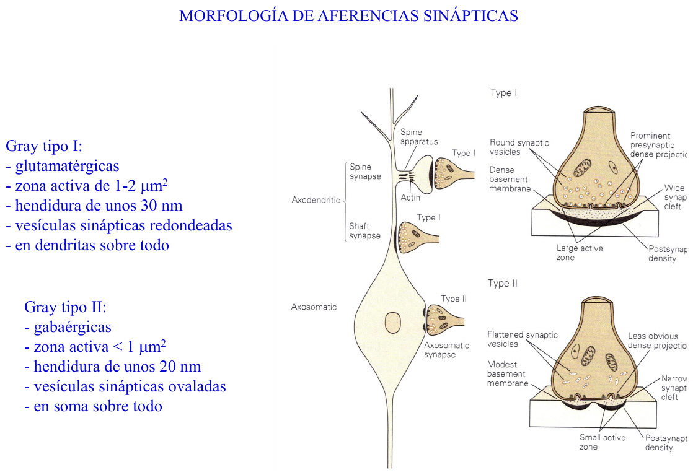
Para saber qué iones mueve una sinapsis se hace un experimento parecido a las curvas I/V del tema 11. Se fija el potencial de membrana de la neurona postsináptica a distintos valores y, a cada uno, se estimula la presináptica y se registra qué pasa. En la columna C se registra el potencial postsináptico y en la D la corriente postsináptica, con voltage clamp.
Empezando por abajo en la sinapsis excitatoria:
Ese voltaje al que no pasa nada y a partir del cual se invierte es el potencial de reversión, aquí EEPSP = 0 mV. Es la misma idea de siempre:
Cuanto más lejos esté Vm del potencial de reversión, más corriente. Si Vm está por debajo, la corriente es hacia dentro y despolariza; si está por encima, hacia fuera e hiperpolariza; y si coincide, no hay corriente aunque los canales estén abiertos. Es lo mismo que pasaba con la corriente de sodio al llegar a ENa en el tema 11.
Las columnas de la derecha dicen qué iones se mueven. El sodio (flechas rojas) entra, y entra más cuanto más negativo es el potencial, porque más lejos estamos de ENa. El potasio (flechas moradas) sale, y sale más cuanto más positivo es el potencial, porque más lejos estamos de EK. A 0 mV la entrada de sodio y la salida de potasio son iguales y se compensan. O sea, el canal deja pasar sodio y potasio a la vez, y su potencial de reversión queda entre EK y ENa, en 0 mV.
(Esto no viene en la diapositiva.) Es el mismo razonamiento de Goldman que explicaba el pico del potencial de acción: cuando una membrana es permeable a dos iones, el potencial va a un valor intermedio entre sus potenciales de equilibrio. Este tipo de canal catiónico no selectivo es, por ejemplo, el receptor de glutamato AMPA o el receptor nicotínico.
La diapositiva añade que, para saber la especificidad iónica, se cambian las concentraciones iónicas. Si al cambiar el sodio de fuera se desplaza el potencial de reversión, el canal deja pasar sodio; si no se mueve, no. Es la misma estrategia que la de bajar el sodio al 10 % en el tema 11.
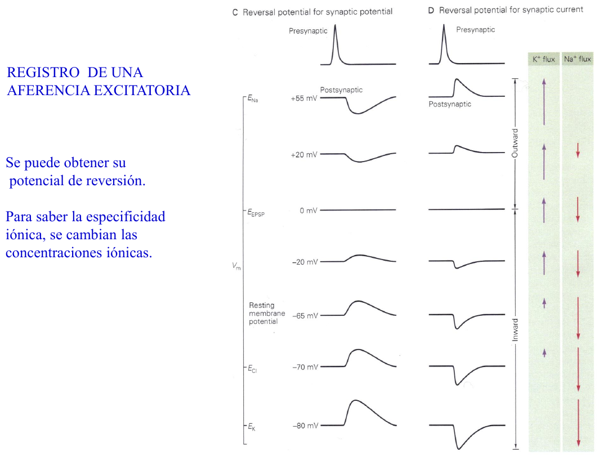
En la sinapsis inhibitoria (receptor GABAA o de glicina), el potencial de reversión coincide con ECl = −70 mV, porque el canal deja pasar cloruro:
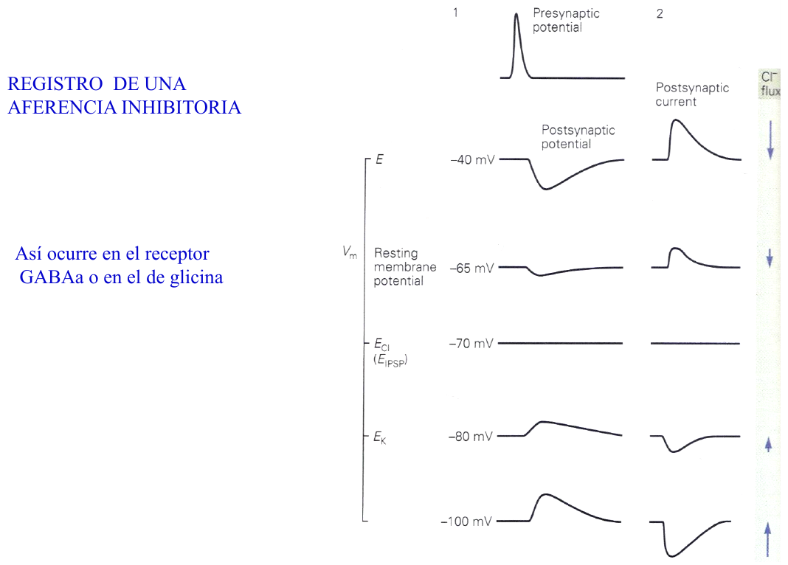
(Esto no viene en la diapositiva.) En reposo el PPSI apenas mueve el potencial, porque −65 está muy cerca de −70. Su efecto está en que, al abrirse los canales de cloruro, la membrana se queda «sujeta» cerca de −70 mV, que está por debajo del umbral. Si a la vez llega un PPSE que intenta subir el potencial, la corriente de cloruro tira en contra, como se veía en el registro de PPSE + PPSI. Lo que decide si una sinapsis es inhibitoria no es si baja o sube el potencial, sino si su potencial de reversión está por debajo del umbral.
En la realidad a una neurona no le llega una sola aferencia, sino muchas, más o menos sincronizadas, excitatorias e inhibitorias a la vez. La suma de todas ellas es lo que determina si se genera o no un potencial de acción. Es la misma figura de antes: una PPSE sola dispara, pero con una PPSI a la vez ya no.
Esa suma es la sumación temporal (una misma aferencia que llega varias veces seguidas, y que depende de τ) y la sumación espacial (aferencias distintas que llegan a la vez a sitios distintos, y que depende de λ), del tema 10.
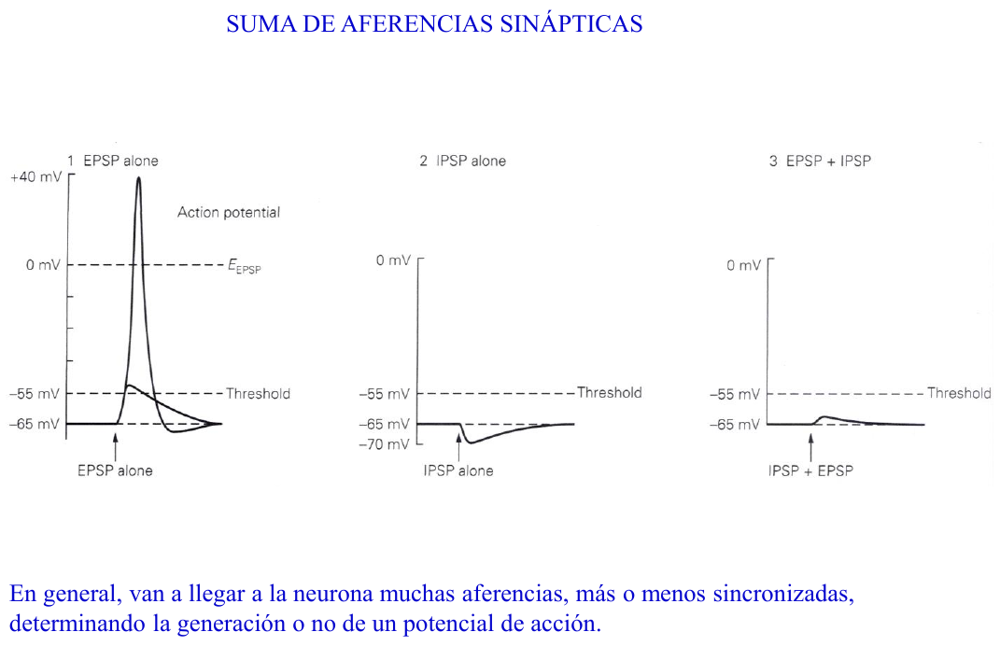
La neurona no es igual en todas partes. Cada zona tiene canales distintos y, por tanto, una función distinta:
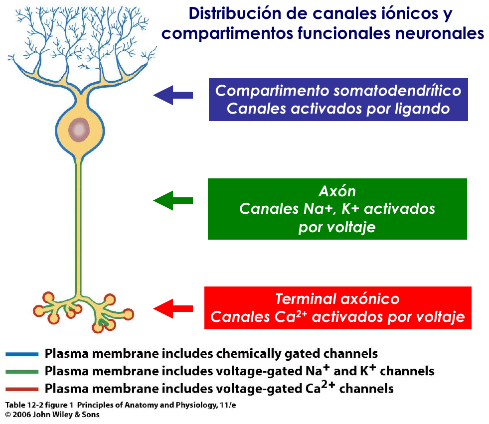
La segunda figura lo resume en una neurona con mielina. Arriba, las dendritas y el soma con los potenciales sinápticos (PPSE y PPSI), donde está la integración. La flecha marca el inicio de los potenciales de acción en el segmento inicial. A lo largo del axón mielinizado, con sus nódulos de Ranvier, está la conducción del impulso. Y abajo del todo, la liberación del neurotransmisor.
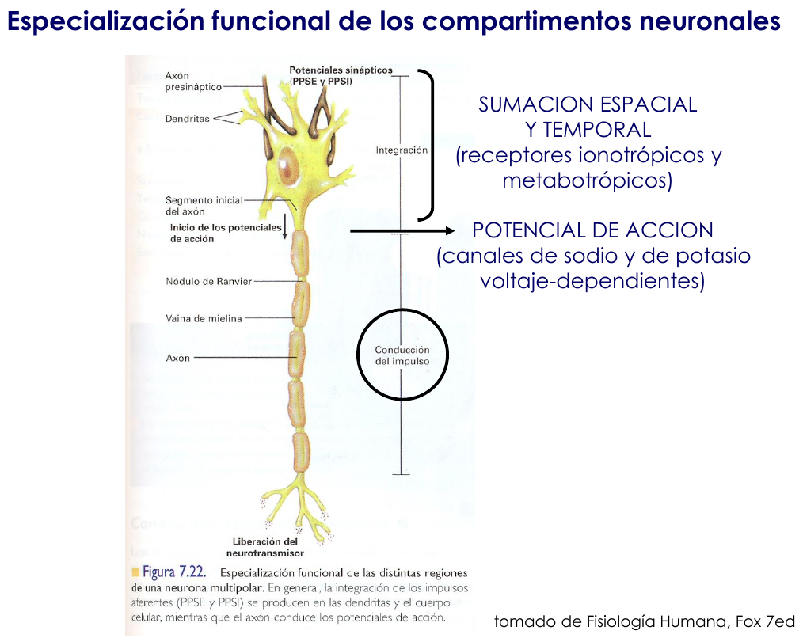
El ejemplo más sencillo de integración es un reflejo. Tiene tres elementos:
El de la diapositiva es el reflejo rotuliano (A). Se golpea el tendón bajo la rodilla y se estira el cuádriceps, que es el músculo extensor. El sensor es el huso muscular del cuádriceps, que detecta el estiramiento. Su neurona sensorial manda potenciales de acción a la médula, el integrador, donde hace dos cosas a la vez:
Los efectores son los dos músculos. (El nombre de este reparto excitar-inhibir es inervación recíproca; no viene en la diapositiva.)
En B está el montaje para comprobarlo. Se estimulan las fibras aferentes Ia de los husos del cuádriceps con electrodos extracelulares. Arriba, el registro de la derecha muestra el potencial de acción de la neurona sensorial y, un poco después, un PPSE en la motoneurona del extensor. Abajo, el potencial de acción de la interneurona y, después, un PPSI en la motoneurona del flexor. La misma aferencia produce excitación en un sitio e inhibición en otro, según el circuito.
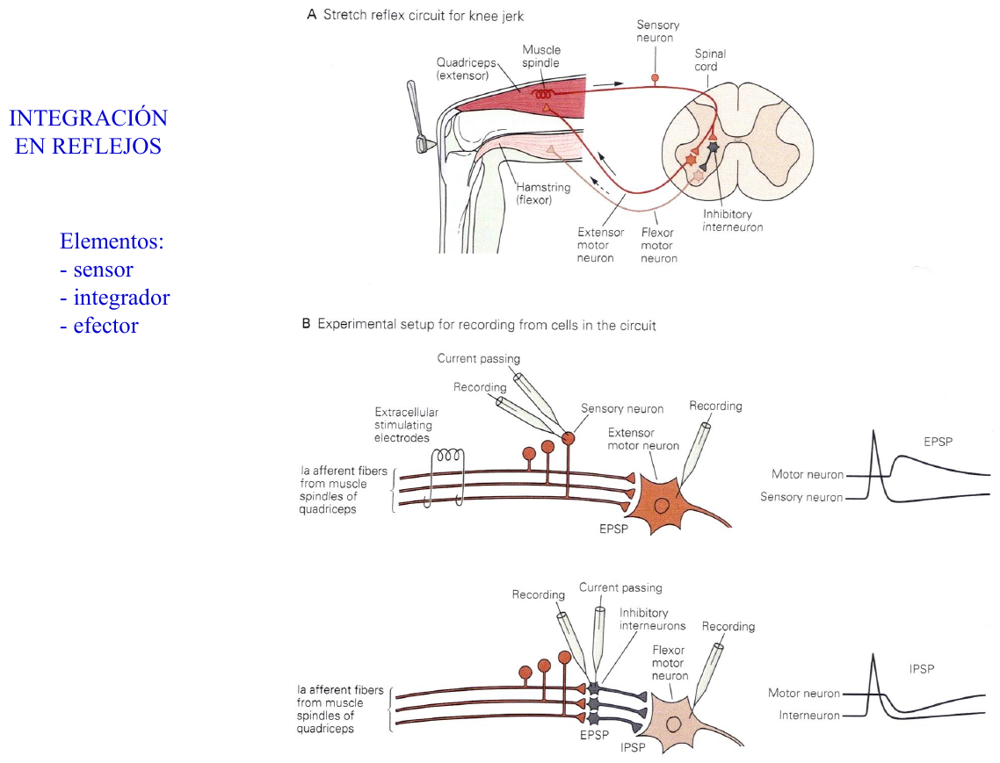
En un reflejo la respuesta está condicionada: la decide el propio circuito. La diapositiva lo muestra con la coactivación alfa-gamma, que sirve para mantener un músculo a la longitud deseada aunque cambie la carga.
En el músculo hay dos tipos de fibras, cada una con su motoneurona. Las fibras normales (extrafusales) las mueven las motoneuronas alfa. Las fibras del huso las mueven las motoneuronas gamma (gamma bias), que ajustan la tensión del huso para que siga siendo sensible. El huso informa a la médula por la fibra Ia, que es la que se registra arriba (R).
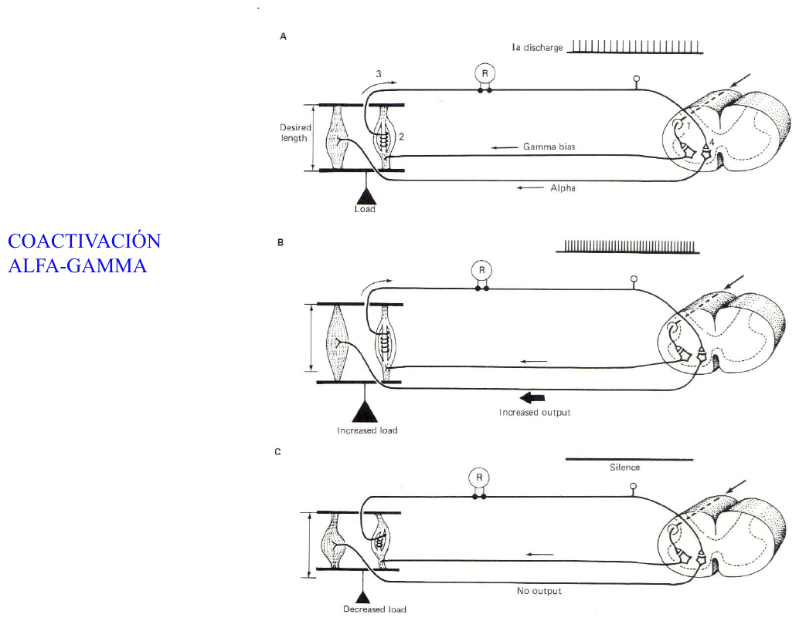
Pero los reflejos son lo sencillo. En general, una neurona recibe miles de aferencias y forma parte de muchos circuitos distintos a la vez. De todo eso, en un momento determinado, saldrá o no una respuesta.
En la figura (A) el soma y las dendritas están literalmente cubiertos de terminales presinápticos, y se ve el segmento inicial y el axón con su vaina de mielina. La escala es de 0,1 mm. En la foto (B), con fluorescencia, la neurona está en verde y los puntos rojos sobre ella son terminales sinápticos.
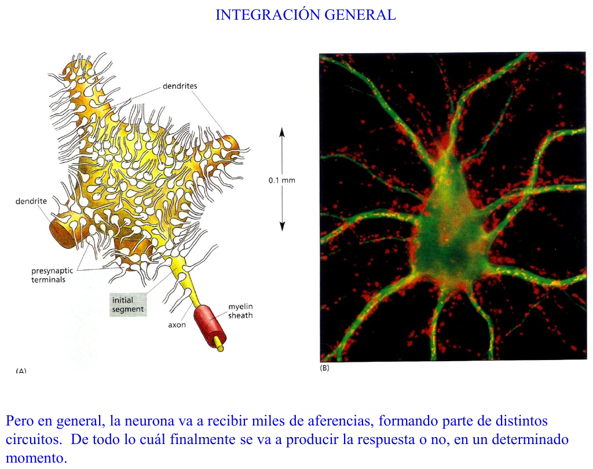
La integración se hace finalmente en el soma y el cono axónico, así que la distancia a la que llega cada aferencia es fundamental. En la figura hay una neurona con dos electrodos de registro: V2 en la dendrita, lejos, y V1 en el soma. Y hay dos aferencias inhibitorias:
Es λ otra vez: un potencial sináptico es pasivo y se va haciendo más pequeño con la distancia. Una aferencia en el soma, al lado de la zona gatillo, influye mucho más en si se dispara o no que una en la punta de una dendrita. Esto encaja con que las sinapsis inhibitorias, las tipo II de Gray, estén sobre todo en el soma.
La diapositiva lo compara con golpear un balón: la respuesta no está definida de antemano, sino que se puede modular, igual que el resultado de un golpe depende de la fuerza, la dirección y el lugar donde se golpea. Es una respuesta no condicionada, al contrario que la de un reflejo. Y además esa respuesta es susceptible de aprendizaje.
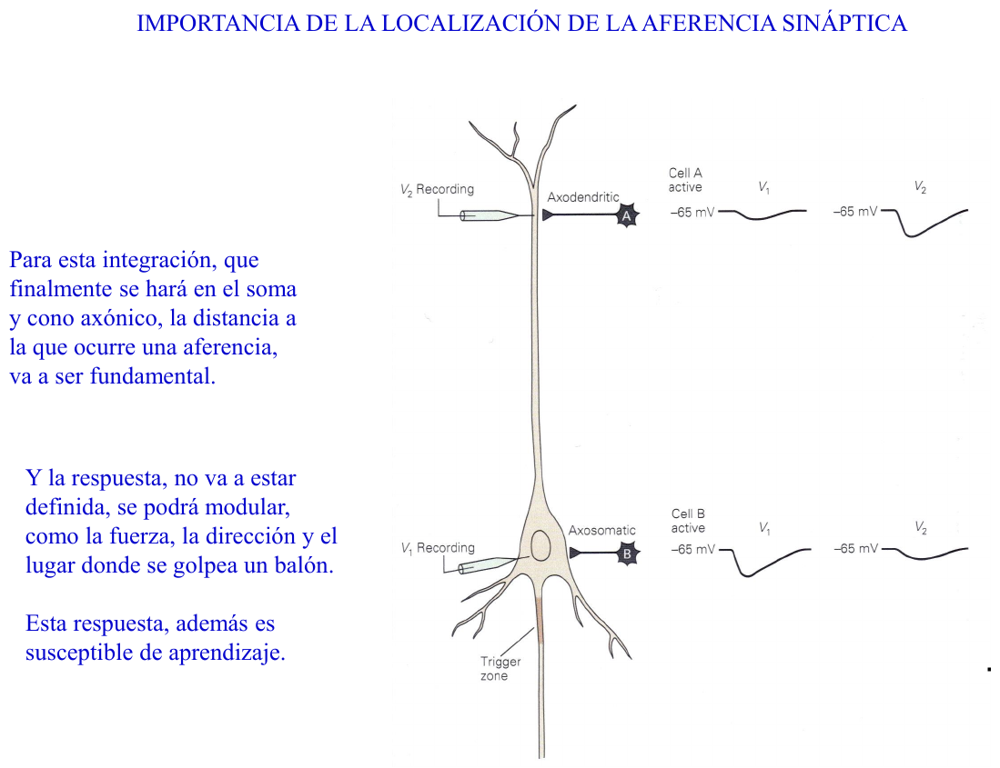
Con el aprendizaje se puede modificar la importancia que tienen las aferencias, es decir, hacer que una misma sinapsis tenga más efecto que antes. El ejemplo de la diapositiva es el del receptor NMDA, y va en cuatro pasos:
Lo importante, como dice la diapositiva, es que en el NMDA importa el potencial de membrana de la postsináptica cuando llega el neurotransmisor. Si llega el glutamato pero la membrana está en reposo, el magnesio sigue tapando y no entra calcio. Solo se potencia la sinapsis si coinciden las dos cosas: que llegue el glutamato y que la membrana esté despolarizada. (A esto se le suele llamar detector de coincidencia, y al refuerzo de la sinapsis, potenciación a largo plazo; no viene en la diapositiva.)
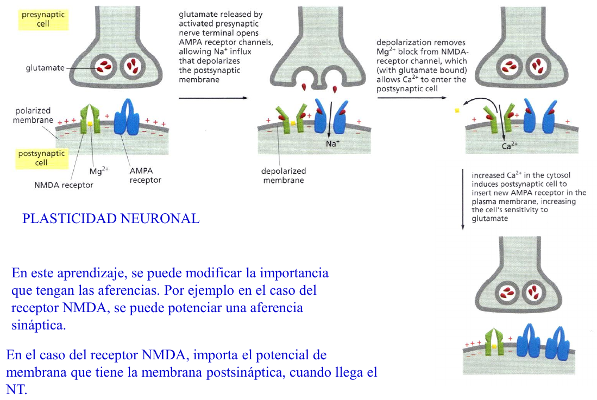
En el tema 11 el potencial de acción se explicó con dos corrientes: la de sodio que se activa y se inactiva rápido, y la de potasio retardada. Pero las neuronas tienen muchas más corrientes, cada una con su propia cinética. Gracias a esa diversidad de cinéticas, y a que algunas dependen de otras, se puede modular el número y la frecuencia de potenciales de acción que genera una neurona.
La figura muestra la forma de cada corriente ante un pulso de voltaje, de −100 a −10 mV. A la izquierda están las corrientes hacia dentro:
A la derecha están las corrientes hacia fuera, todas de potasio:
(Lo que sigue no viene en la diapositiva.) Con la misma regla de Goldman se puede intuir qué hace cada una. Las hacia dentro (sodio y calcio) acercan la membrana a sus potenciales de equilibrio positivos y facilitan el disparo. Las hacia fuera de potasio la acercan a EK y lo frenan. Por ejemplo, una corriente lenta de potasio como la IM, o la IC que se va acumulando según entra calcio, hace que los potenciales de acción se vayan espaciando durante un estímulo largo. Y la IT de calcio, si la neurona está hiperpolarizada (con sus canales desinactivados), puede producir una despolarización que dispare una ráfaga.
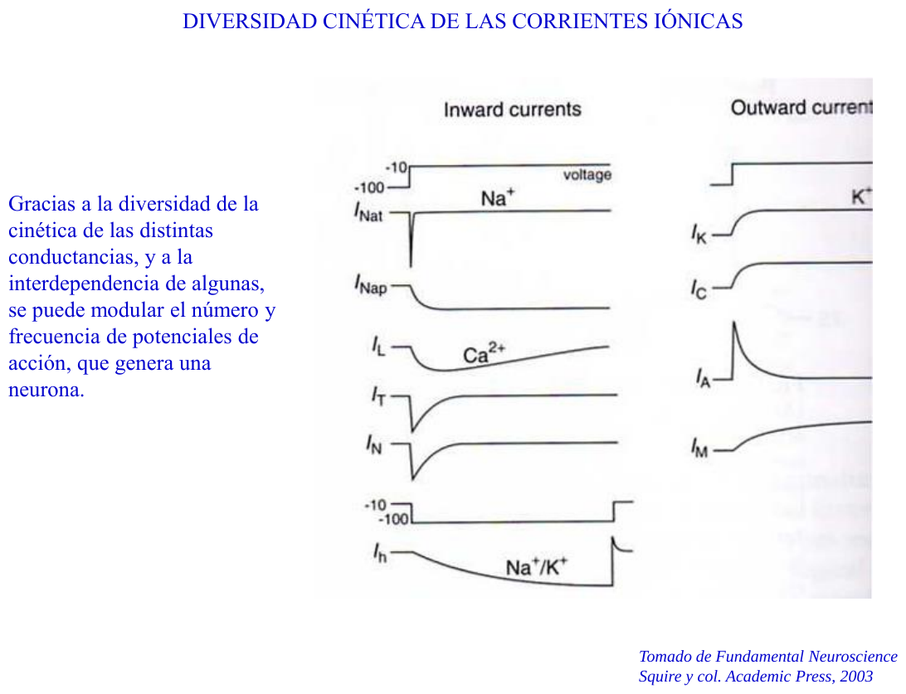
Ese número y frecuencia de potenciales de acción es lo que se llama el patrón de disparo. La diapositiva muestra el corte de un cerebro con el registro de distintas neuronas, cada una ante un pulso de corriente (el escalón de arriba):
El ejemplo del tálamo es el más interesante: la misma neurona responde de forma distinta al mismo estímulo según el potencial de membrana del que parta, porque eso cambia qué canales tiene disponibles.
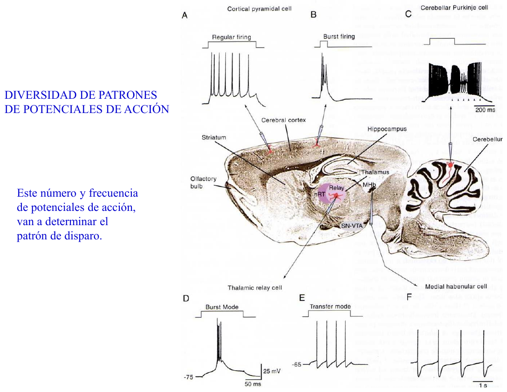
Al final todo se resume en dos patrones básicos ante una corriente despolarizante mantenida (la barra azul):
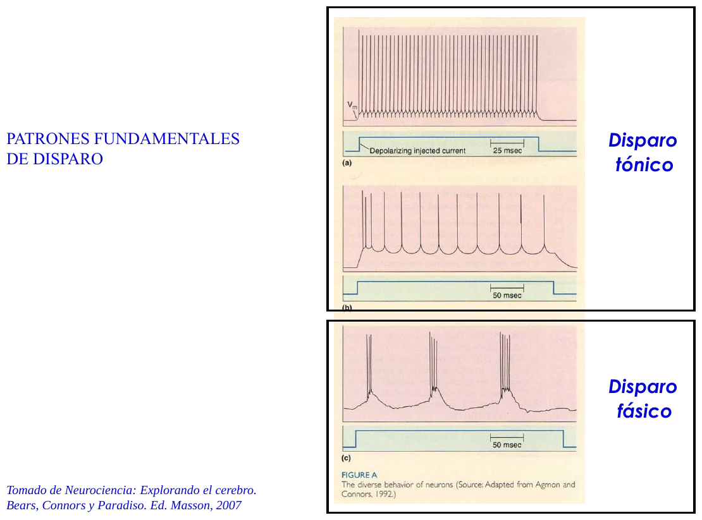